Une identité commune aux trois propositions
Le sceau
des Obélisques.
Le signe que vous avez retenu reste au centre. Une enceinte ouverte, un Obélisque et un fil de mana : une marque qui peut vivre dans une grande illustration comme dans la barre de navigation.
Le travail porte ici sur ses usages : contraste, réduction, typographie et place dans l’interface. Le symbole principal est conservé ; sa version compacte réduit le nombre de traits.
Télécharger le symbole SVG
Trois usages, une silhouette
Le signe principal
Le bronze porte la silhouette. Le mana reste à l’intérieur et au sommet. Pour la vitrine, le lobby et les grands en-têtes.
SVG couleur ↓
La marque en une couleur
Une silhouette autonome, sans dépendre de la lueur violette. Les espaces restent transparents pour un usage sur fond sombre.
SVG monochrome ↓
La présence discrète
Sans les doubles filets ni l’éclat supérieur. Pour l’onglet du navigateur et les petits repères ; à 16 pixels, la silhouette prime.
SVG compact ↓
La couleur a une fonction
Nuit
#0B0C16 · profondeur
Ardoise
#1A2033 · surfaces
Mana
#AD9AFF · sélection
Bronze
#D0AD6D · identité
Ivoire
#EEEAF8 · lecture
Le rouge signale une menace ; le vert un état favorable. Ils renseignent une situation, accompagnés d’un mot ou d’un symbole, sans devenir une décoration permanente.
Le récit et la lecture
Cinzel · titres et marque
Votre cité. Votre prochaine décision.
Manrope · ressources, navigation et descriptions
48 200 Bois +1 240/h Construction en cours · 42:10
Les deux polices sont servies avec les maquettes. Cinzel donne le caractère gravé ; Manrope garde des chiffres et des libellés nets. Ce mot-symbole typographique est une proposition, pas un lettrage exclusif dessiné sur mesure.
Évolution proposée à partir du sceau de la première série. Les signes K, gonfanons et sceaux décrits dans les travaux Claude enrichissent les usages possibles, mais ne remplacent pas ici votre symbole préféré.